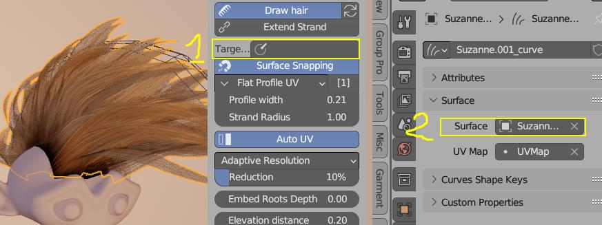
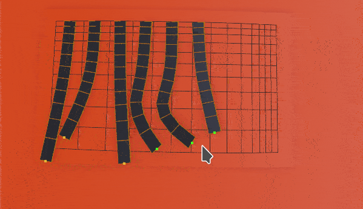
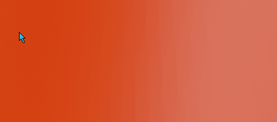
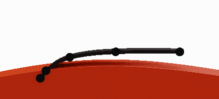
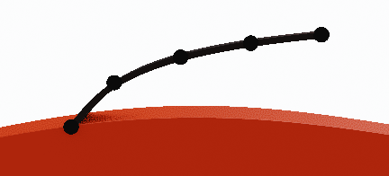
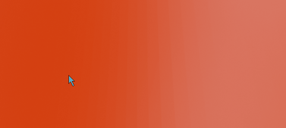

Drawing Hair¶
In video above procedural noise is applied to drawn strands. That is why they to not follow the stroke exactly.
In Hair Tool you can draw hair out of selected mesh surface or extend existing curves.
To use hair drawing:
- select mesh object on which surface you want to draw hair
- enable 'Draw Hair' button located in: right UI Sidebar: "Hair Tool" tab -> 'Draw Hair' panel.
- hold D-Key and draw in 3D viewport with LMB; new strands will be painted.
Note: When you modify object that is being drawn on, you may need to refresh the snapping cache by using 'Refresh' icon located next to 'Draw hair' button. Otherwise, the new drawn strands may snap to old object position.
You can assign any profile to drawn hair. You can use either:
- Ctrl+Shift+H pie menu -> Assign Profile
- Go to Hair System Panel, then expand Profile sub-panel
Target for Snapping¶
If you have curve hair object selected, when drawing, new strokes will be added to curve. Stroke will snap to Curve: Surface object, if it is defined in curve data tab (see 2 in image below). You can override this object using 'Target Object' input (1 in image below)
 Target property (1) takes precedence over Curve: Surface object (2). But one of them has to be defined for snapping to work
If mesh is selected when drawing, new hair curve will be automatically created and its Surface object will be set to selected mesh.
Example od drawing curve ribbons
Parameters¶
 Extend Strand - Add new drawn points te existing selected strands
-
Profile Width - curve profile width (same for all strands)
-
Strand Radius - per strand radius
-
Snapping
- With Snapping - snaps whole drawn stroke to mesh surface, then elevate strand above surface by 'Elevation distance'
- Without Snapping - only first point of stroke is snapped to drawn mesh surface. The following points are then placed orthogonally to view direction
- UV - Assign UV box to drawn curve ribbons: Automatically or pick of the UV boxes, by box number (see Editing UV's)
 Offset to tip - Offset spline points more toward tip
Offset to tip - Offset spline points more toward tip
 Offset to root - Offset spline points more toward root
Offset to root - Offset spline points more toward root
 Resolution - [Adaptive] or [Fixed] - point count per spline
Resolution - [Adaptive] or [Fixed] - point count per spline
 Max length - Maximum hair length (0 - disabled)
 Elevation distance - Elevation strands above surface by this distance
 Elevation falloff - Elevation strength over strand length
 Embed Roots Depth - Move strands first point into mesh surface (only curve ribbons)
Embed Roots Depth - Move strands first point into mesh surface (only curve ribbons)
 Align tilt - Align ribbons tilt to surface
Align tilt - Align ribbons tilt to surface
 Use Pressure - Use pen pressure to change strand width